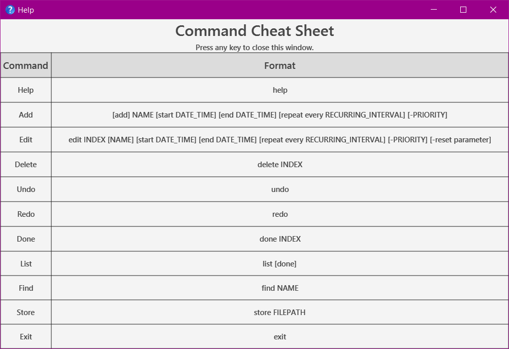
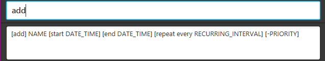
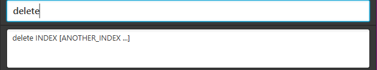
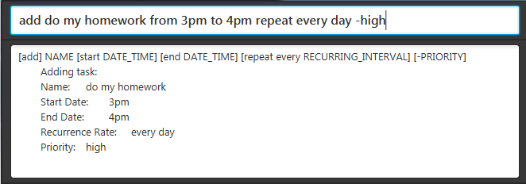
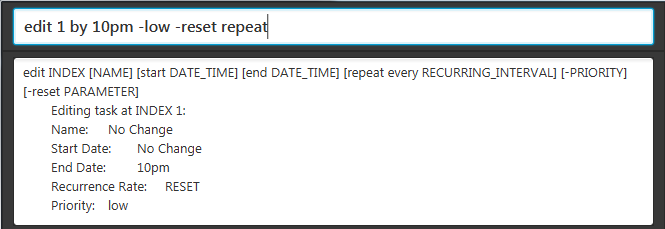

User Guide
Quick Start
Ensure you have Java version 1.8.0_60 or later installed in your computer.
Having any Java 8 version is not enough.
This app will not work with earlier versions of Java 8.
- Download the latest
DearJim.jar from the releases tab.
- Copy the file to the folder you want to use as the home folder for DearJim.
Double-click the file to start the app. The GUI should appear in a few seconds.

Figure 1: GUI of DearJim
- Type the command in the command box and press Enter to execute it.
e.g. typing help and pressing Enter will open the help window.
- Some example commands you can try:
list : lists all tasks. This is the default view.addLearn how to use DearJim :
adds a task to DearJim.delete1 : deletes the first task shown in the current list.exit : exits the app.
- Refer to the Features section below for details of each command.
Features
Command Format
- Format:
<command word> <parameters>
- Words in
UPPER_CASE are the parameters.
- Fields in
[] are optional.
- The order of parameters is fixed.
Viewing help: help
Opens a help window that contains a cheat sheet of all the commands of DearJim.
You can leave the help window open while using DearJim if you need to refer to the cheat sheet.
Format: help
While the help window is selected, you may close it by simply pressing any key on your keyboard!

Figure 2: Help Command
Input History
Use the Up and Down arrow keys to navigate your input history.
This gives you quick access to your previous and next inputs.
Adding a task: add
Adds a task into DearJim.
Format: [add] NAME [start DATE_TIME] [end DATE_TIME] [repeat every RECURRING_INTERVAL] [-PRIORITY]
You may also substitute start with from/at, end with to/by.
By default, if no valid command is specified, the input will be treated as an add command. This means typing in add is optional.
If you would like to add a task with a name that begins with other command words, just include the add to override the other command words.
Example:
help my mum to buy cooking ingredients |
help |
Execute help command |
|
add help my mum to buy cooking ingredients |
add |
add a task with name help my mum to buy cooking ingredients |
|
Adding a task
Format: NAME
The simplest form of a task. Type away!
Example:
help my mum to buy cooking ingredients
Specifying task priority
You can assign a PRIORITY of low, medium or high to your task.
Tasks have medium PRIORITY by default.
Keyword: -PRIORITY
To specify the priority for a task, input a - followed by the PRIORITY.
PRIORITY also accepts variations of low, medium and high.
low |
l, low |
medium |
m, med, medium |
high |
h, high |
Examples:
Watch drama -lBuy coffee powder -medBuy washing powder -high
Adding a task with deadline
Nobody likes deadlines. What's worse is missing them.
Add deadlines to your task so you will know when you need to complete them!
Format: NAME end DATE_TIME [repeat every RECURRING_INTERVAL] [-PRIORITY]
end denotes a deadline.
end can also be substituted with by or to.
DATE_TIME is flexible!
- If no
DATE is specified, DATE will be assumed to be today.
- If no
TIME is specified, TIME will be assumed to be 11:59pm.
Valid Dates & Times
| MM/DD/YYYY |
12/12/2016 |
12 December 2016 |
| MM/DD/YY |
12/12/16 |
12 December 2016 |
| MM/DD |
12/12 |
12 December, Current Year |
| Calendar |
12 December 2016, 12th December 2016
12 December 16 |
12 December 2016 |
| Calendar (Date and Month) |
12 December |
12 December, Current Year |
| Calendar (Month) |
may, May
dec, Dec, December |
1 May, Current Year
1 December, Current Year |
| Day |
monday, Mon |
Nearest upcoming Monday |
| Relative Date |
today, tonight
tmr, tommorow
next Tues
5 days later |
Today
Tomorrow
Next Tuesday
5 days later |
| 24Hr |
20.50, 20:50 |
8.50pm |
| AM/PM |
8.50pm, 8:50pm, 0850pm |
8.50pm |
| Preset |
midnight
noon |
12am
12pm |
DearJim does not support the following 24hr format: 2050, as this input can be misinterpreted as the value of year.
Examples:
Do project proposal by 5pm tmreat lunch by 1pm today -highBuy coffee for boss by 7:00finish CS2101 assignment by 13th Sep
NAME with numbers from 0000 to 2359 may be wrongly interpreted as time. If you need to add a NAME with these numbers, you can enclose the NAME with double inverted commas to denote the NAME explicitly.
Example:
Lower word count by 1500 |
add |
Lower word count |
by 1500 |
add a task with name Lower word count and deadline 1500 |
"Lower word count by 1500" |
add |
Lower word count by 1500 |
NONE |
add a task with name Lower word count by 1500 |
Adding a task with time interval
Having a company meeting? Planning to have lunch with a friend next week?
Add a task with a time interval so you will know what time your task starts and ends!
If you are unsure about the end time for the task, you can leave it blank.
Format:
NAME start DATE_TIME [end DATE_TIME] [repeat every RECURRING_INTERVAL] [-PRIORITY]
Note: You may use from or at to indicate the start time, and to or by to indicate the end time.
Example:
Company meeting tonight at 7pm to 9pmFamily dinner at noonMeet Akshay from 1pm -h
Specifying repeated tasks
Have one of those pesky tasks you need to do every now and then?
DearJim also allows you to specify tasks that need to be repeated at a specific RECURRING_INTERVAL. Never forget them again!
Keyword: repeat every RECURRING_INTERVAL
Note: You may only specify a RECCURING_INTERVAL for tasks that are timed.
RECURRING_INTERVAL can be specified in a few formats, with some examples listed below.
| Hour |
hour, 3 hours |
| Day |
day, 3 days, monday, mon |
| Week |
week, 5 weeks |
| Month |
month, 2 months |
| Year |
year, 6 years |
Examples:
Run at track at 7am repeat every 3 daysVisit mum repeat every sun
Editing a task: edit
Just in case you need to change any details, or add in missing ones into your task, simply edit them in DearJim.
Format: edit INDEX [NAME] [start DATE_TIME] [end DATE_TIME] [repeat every RECURRING_INTERVAL] [-PRIORITY]
INDEX refers to the task number in the current displayed list.
Note: edit has a very similar format to add.
Examples:
Company meeting tonight at 7pm to 9pmedit 2 Company meeting tomorrow morning at 7am to 9am -highBuy coffee for boss by 8am repeat every dayedit 3 Buy coffee for boss by 7am repeat every 2 days
Editing out details in a task
You can also remove parameters that are no longer relevant.
Format: edit INDEX [-reset parameter] [repeat] [start] [end]
-reset repeat |
Removes recurring interval from task |
-reset start |
Removes start time from task |
-reset end |
Removes end time from task |
Examples:
Buy coffee for boss, by 8am repeat every dayedit 1 -reset repeat startedit 2 -reset end
Note: -reset will override any edit of the same field that comes before it in your input.
Deleting a task: delete
Deletes an existing task in DearJim. This will remove it from the storage.
Format: delete INDEX
You can delete multiple tasks using a single command by entering the indexes of the tasks you want to delete, separating each index with a space.
Example:
Clearing all tasks: clear
Deletes all tasks in DearJim.
Format: clear
Archiving a task: done
Marks a task as done and archives it in DearJim.
Format: done INDEX
You can done multiple tasks using a single command by entering the indexes of the tasks you have completed, separating each index with a space.
Example:
Undoing a command: undo
Reverses the effects of the previous undoable command.
Helps you to undo any accidental mistakes that you have made!
Format: undo
Commands that you can undo (Undoable commands):
addeditdeletecleardone
Redoing a command: redo
Reverses a previous undo command.
Not satisfied with your last undo? redo will reverse the undo for you!
Format: redo
Note: redo can only reverse your last undo if no undoable commands have been entered after that undo.
Listing tasks: list
Listing all undone tasks
Switches the task list view to the undone list view, to show all undone tasks in DearJim.
Format: list
Listing all undone tasks of a specific day
Switches the task list view to the undone list view, to show all tasks on the day specified.
Format: list DAY
Example:
list todaylist tmrlist monday
Listing all done tasks
Switches the task list view to the done list view, to show all done tasks in DearJim.
Format: list done
add and edit commands do not work in done list view. As such, you are not able to directly add tasks into the done list, or edit the details of done tasks.
Finding a task: find
Forgot about the details of a task that you have added earlier? You can find an existing task by its name.
Format: find NAME
find is case-insensitive - find AKSHAY will match find akshay
If no NAME is provided, all uncompleted tasks will be displayed
Examples:
find Akshayfind company meetingfind
Changing storage location: store
Need to look at your task on the move? Simply store the data at another location and bring it along with you.
In addition to changing the storage file location, store handles your existing data in two different ways, depending if the filepath you specify is an existing storage file.
If the storage file specified is not present, DearJim will create this new file and store your current data in it.
If the storage file specified is present, data will be loaded from this storage file into DearJim.
Format: store FILEPATH
DearJim data is stored in XML file format. There is no need to specify the file extension .xml, it will be appended to your target file name automatically. store supports both relative and absolute file paths.
Examples:
store data/onthemovestore /Users/jim/Dropbox/filename
Exiting the application: exit
Closes the application.
Format: exit
If you have forgotten about the command formats, simply type any word and DearJim will provide you hints on the command format that you might want to use!
Examples:
Typing add in the command input generates the format for add in the result display

Figure 3: Hints for add command
Typing delete in the command input generates the format for delete in the result display

Figure 4: Hints for delete command
Instant add and edit task preview
DearJim features an instant add and edit command task preview, allowing you to preview the task details as your type your input!
Now you can be sure of how your input will be interpreted!
Examples:
- Typing
add do my homework from 3pm to 4pm repeat every day -high generates an instant add preview

Figure 5: Instant preview for add command
- Typing
edit 1 by 10pm -low -reset repeat generates an instant edit preview

Figure 6: Instant preview for edit command
Saving the data
Data in DearJim is automatically saved on the hard disk after any command that changes the data is executed.
There is no need to save manually.
You will never have to worry about forgetting to save your data while using DearJim! Hurray!
FAQ
Q: How do I transfer my data to another computer?
A: Install the app on the other computer. Upon starting DearJim, an empty data file is created. Overwrite the contents of the data file with the data file in your previous DearJim folder.
Q: How do I install the program?
A: Double-click the DearJim.jar file.
Command Summary
| Help |
help |
| Add |
[add] NAME [start DATE_TIME] [end DATE_TIME] [repeat every RECURRING_INTERVAL] [-PRIORITY] |
| Edit |
edit INDEX [NAME] [start DATE_TIME] [end DATE_TIME] [repeat every RECURRING_INTERVAL] [-PRIORITY] [-reset parameter] |
| Delete |
delete INDEX |
| Clear |
clear |
| Done |
done INDEX |
| Undo |
undo |
| Redo |
redo |
| List |
list [done] |
| Find |
find NAME |
| Store |
store FILEPATH |
| Exit |
exit |